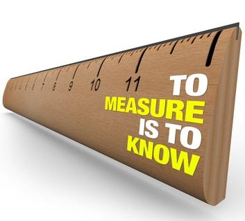

Metrics - MSE, R^2, RMSLE
Obviously it is of great importance to understand and utilize the metrics properly also in machine learning. Deriving insights without making clear sense of metrics is like choosing between 1 litre of milk and 0.6 galon of milk. If we dont know well the metrics litre and galon we can't make an healty decision.
In this notebook we talk about the regression model metrics:
- Mean Squared Error ($MSE$)
- R-Squared ($R^2$)
- Root Mean Squared Logarithmic Error ($RMSLE$)
We will later add new metrics to this notebook by time. 
Probability vs Likelihood
To understand these concepts better, let's walk through one of the simplest random variable example: coin tossing
- If we flip a coin
100times and it comes up head53times then we could have a strong feeling that the coin is fair. - How would we feel about the fairness of the coin if we see
30heads70tails after100tosses? -
Can we trust the coin?
-
To answer this question, we need to ask another one: How much our sample support our hypothesis that
P(H)=P(T)=1/2? - Note that the direction of the question has reversed.